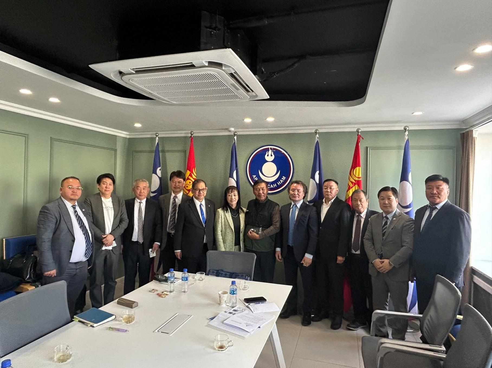
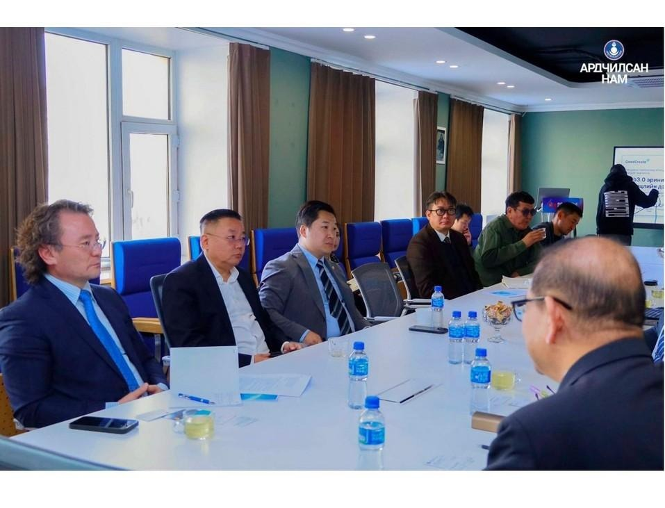
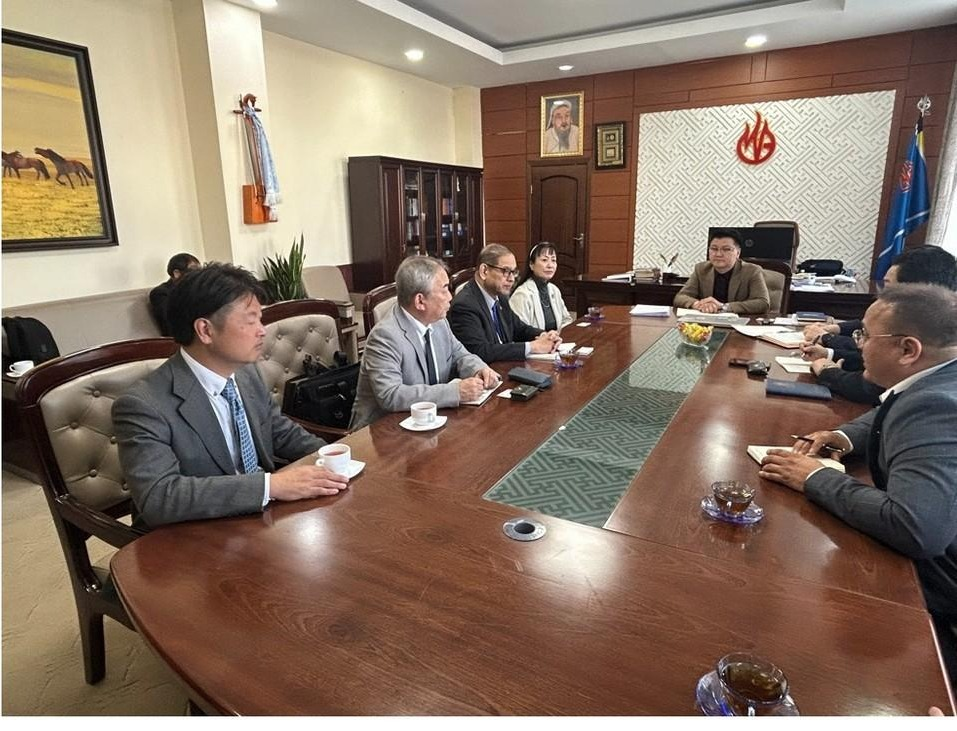
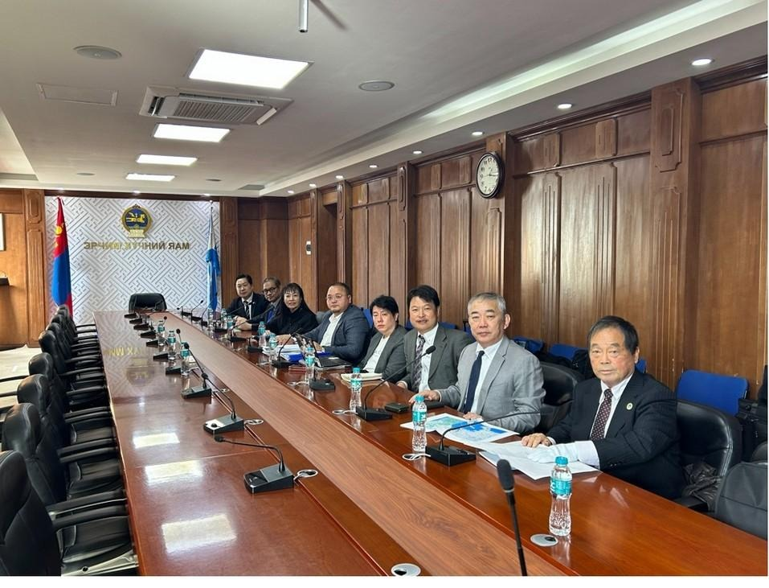
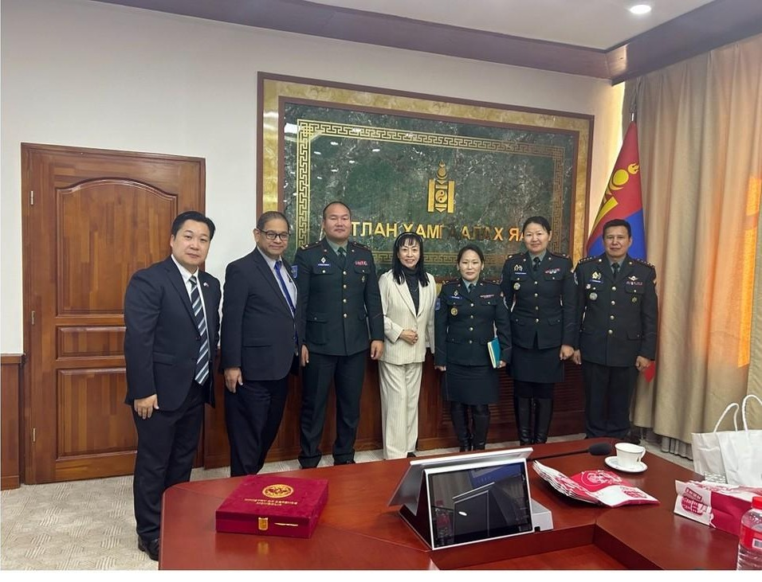
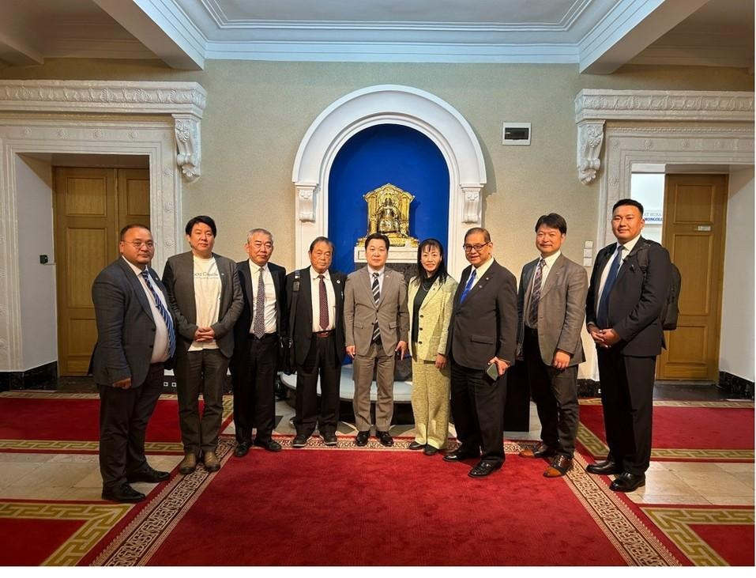
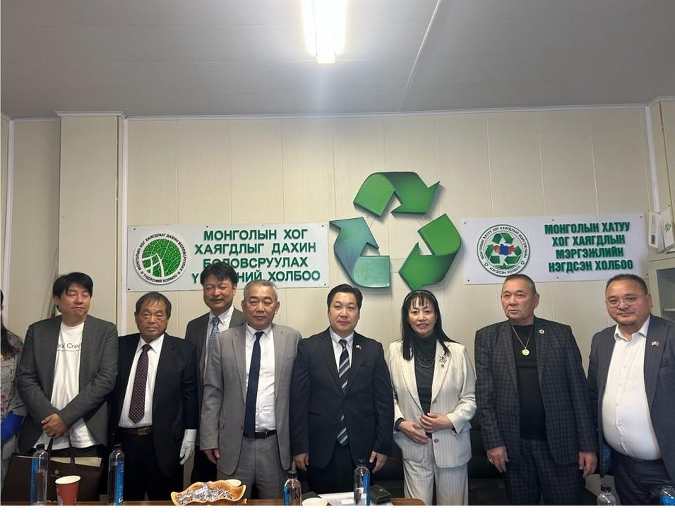

モンゴルの政党・関係機関を訪問し、技術協力・事業連携について意見交換
コダイパワー株式会社は、モンゴルの政党および関係機関を訪問し、環境・エネルギー・AI・情報通信分野の技術協力や事業連携の可能性について意見交換を行いました。

訪問の概要
報告書によると、2026年10月29日に民主党指導部との会談が行われ、当社代表取締役の谷宥諄と前田雄吉氏（元衆議院議員）らが参加しました。訪問期間中には省庁・関連団体なども訪問しました。
主な協議分野
環境改善と資源循環
大気・土壌・水質汚染の低減に向けた技術や、高圧水技術による廃棄物処理・再利用など、現地の環境課題に応じた技術導入の可能性について意見交換しました。
エネルギーと燃料加工
新たな電力源の導入や燃料加工など、エネルギー分野における協力の可能性について協議しました。
AIと情報通信インフラ
AIデータセンターの設立に向けた協力の可能性や、情報セキュリティ、データのプライバシー保護・保管、先進的な通信技術について意見交換しました。
会談と関係機関への訪問






今後の取り組み
今回の訪問で得られた接点をもとに、現地のニーズや技術導入に必要な条件を確認し、関係者との継続的な対話を通じて、具体的な協力の可能性を検討してまいります。
本記事は訪問・意見交換の報告です。技術採用、予算への組み込み、研修・導入、受注・投資・契約締結の決定を示すものではありません。
モンゴル訪問報告書
報告日：2026年11月3日 ／ 改定日：2026年11月5日
HP記事の公開日：2026年11月3日
公式お問い合わせ窓口
コダイパワー株式会社
電話：03-6257-2222
メール：info@kodaipower.co.jp